СТРОИТЕЛЬНЫЕ НОРМЫ И ПРАВИЛА
НАГРУЗКИ И ВОЗДЕЙСТВИЯ
НА ГИДРОТЕХНИЧЕСКИЕ
СООРУЖЕНИЯ
(ВОЛНОВЫЕ,
ЛЕДОВЫЕ И ОТ СУДОВ)
СНиП 2.06.04-82*
Москва 2004
РАЗРАБОТАНЫ ВНИИГ им. Б.Е. Веденеева
Минэнерго СССР (д-р техн. наук Д.Д. Лаппо - научный руководитель и редактор работ; канд. техн. наук А.П.
Пак - руководитель темы; кандидаты техн. наук Л.Б. Певзнер и И.Н.
Шаталина; И.Я. Попов
и О.С. Наумов) при
участии организаций Минобороны (доктора техн. наук П.П. Кульмач и A.M. Жуковец; кандидаты
техн. наук Б.В. Балашов, Н.Г. Заритовский, Н.Н. Загрядская,
В.В. Каплун и С.С. Мищенко); Союзморниипроекта
Минморфлота (д-р физ.-мат. наук Ю.М. Крылов, канд.
физ.-мат. наук С.С. Стрекалов, канд. техн. наук И.Б. Тишкин);
Института водных проблем АН СССР (канд. техн. наук Г.Ф.
Красножон); Государственного океанографического института
Госкомгидромета (д-р физ.-мат. наук Г.В. Матушевский); МИСИ
им. В.В. Куйбышева Минвуза СССР (д-р техн. наук Г.Н.
Смирнов, канд. техн. наук И.Ш. Халфин); Ленинградского института водного транспорта Минречфлота
РСФСР (д-р техн. наук В.К. Штенцель);
ЦНИИСа Минтрансстроя (д-р техн. наук А.И. Кузнецов, кандидаты
техн. наук Г.Д. Хасхачих, Л.А. Морозов);
НИИЖТа МПС (д-р техн. наук К.Н. Коржавин) и института
Гипроморнефтегаз (кандидаты техн. наук М.Ф. Курбанов и В.Г. Саркисов) и ВНИПИ
Морнефтегаз (д-р физ.-мат. наук С.А. Вершинин) Мингазпрома.
ВНЕСЕНЫ Минэнерго СССР.
ПОДГОТОВЛЕНЫ К УТВЕРЖДЕНИЮ Отделом технического нормирования и
стандартизации Госстроя СССР (В.А. Кулиничев).
СНиП 2.06.04-82* является переизданием СНиП 2.06.04-82 с изменением №
1, утвержденным постановлением Госстроя СССР от 12 марта 1986 г. № 27, и с
изменением № 2, утвержденным постановлением Минстроя России от 13 июля 1995 г. № 18-66 и
разработанным: ВНИИГ им. Б.Е. Веденеева Минтопэнерго (канд. техн. наук А.П. Пак - руководитель темы; канд. техн. наук М.Г.
Гладков - ответственный исполнитель; д-р техн. наук А.Л. Гольдин;
кандидаты техн. наук В.Н. Карнович,
B.C. Прокопович, И.Н.
Шаталина) при участии ВНИПИморнефтегаз Минтопэнерго (д-р физ.-мат. наук С.А.
Вершинин, канд. техн. наук Д.А. Мирзоев), ААНИИ
(кандидаты физ.-мат. наук В.П. Трипольников, Б.А.
Федоров) и ГМНИЦ
(д-р геогр. наук Б.М. Гинзбург, канд.
геогр. наук К.Н. Полякова)
Роскомгидромета, СибГАПС МПС (д-р техн. наук К.Н. Коржавин,
канд. техн. наук А.Б. Ивченко), МИСИ им. В.В. Куйбышева (кандидаты техн. наук Г.Н. Евдокимов,
С.И. Рогачко) и СПбГТУ (д-р физ.-мат. наук К.Н.
Шхинек, канд. техн. наук Д.Г. Мацкевич) Минвуза.
При пользовании
нормативным документом следует учитывать утвержденные
изменения строительных норм и правил и
государственных стандартов, публикуемые в журнале
«Бюллетень строительной техники» и информационном
указателе «Государственные стандарты».
|
Государственный
комитет СССР
по делам строительства
(Госстрой СССР)
|
Строительные нормы
и правила
|
СНиП 2.06.04-82*
|
|
Нагрузки и
воздействия
на гидротехнические сооружения
(волновые, ледовые и от судов)
|
Взамен
СНиП
II-57-75
|
Настоящие нормы распространяются на речные и морские
гидротехнические сооружения при проектировании вновь строящихся и реконструкции
существующих объектов.
Нормы устанавливают нормативные значения нагрузок и воздействий от
волн, льда и судов на гидротехнические сооружения. Расчетная нагрузка должна
определяться как произведение нормативной нагрузки на коэффициент надежности по
нагрузкам gb
учитывающий возможное отклонение нагрузки в неблагоприятную сторону от ее
нормативного значения; gf должен
приниматься согласно требованиям, приведенным в главе СНиП по основным
положениям проектирования речных гидротехнических сооружений.
Нагрузки от волн и льда на гидротехнические сооружения I класса, а также расчетные элементы волн на открытых и огражденных
акваториях необходимо уточнять на основе натурных наблюдений и лабораторных
исследований.
|
Внесены
Минэнерго СССР
|
Утверждены
постановлением
Госстроя СССР
от 15 июня 1982 г. № 161
|
Срок введения
в действие
1 января 1984 г.
|
1.1. Расчет сооружений на воздействие стоячих волн со стороны открытой
акватории (рис. 1) должен
производиться при глубине до дна db
> 1,5h и глубине над бермой dbr ≥
1,25h; при этом в формулах для
свободной волновой поверхности и волнового давления вместо глубины до дна db, м,
необходимо применять условную расчетную глубину d, м,
определяемую по формуле
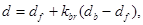
(1)
где df - глубина
над подошвой сооружения, м;
kbr - коэффициент,
принимаемый по графикам рис. 2;
h - высота бегущей волны, м,
принимаемая по приложению 1.
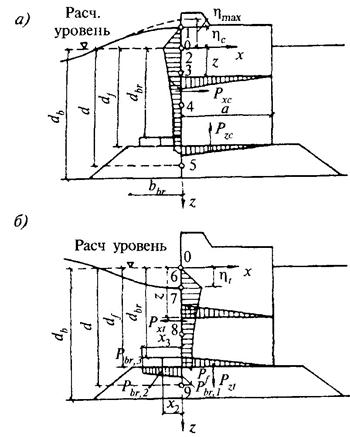
Рис. 1. Эпюры давления стоячих волн на вертикальную стену со стороны
открытой акватории
а - при гребне волны, б
- при ложбине волны (с эпюрами взвешивающего волнового давления на берменные
массивы)
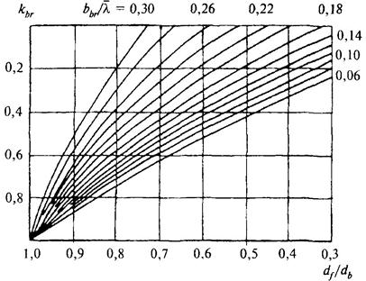
Рис. 2. Графики значений коэффициента kbr
1.2. Возвышение или понижение свободной волновой поверхности h, м, у вертикальной стены, отсчитываемое от
расчетного уровня воды, должно определяться по формуле
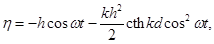
(2)
где 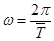
- круговая частота волны;
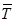
-
средний период волны, с;
t - время, с;
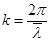
-
волновое число;
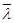
- средняя длина
волны, м.
При действии стоячей волны на вертикальную стену необходимо предусматривать
три случая определения h по формуле (2) для
следующих значений coswt:
а) coswt = 1 - при подходе к стене вершины волны, возвышающейся над
расчетным уровнем на hmax, м;
б) 1 > coswt > 0 - при максимальном значении горизонтальной линейной
волновой нагрузки Рхс, кН/м,
для гребня волны, возвышающегося над расчетным уровнем на hс, в
этом случае значение coswt
должно определяться по формуле
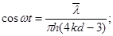
(3)
в) coswt = -1 - при максимальном значении горизонтальной линейной волновой
нагрузки Pxt, кН/м,
для подошвы волны, расположенной ниже расчетного уровня на ht.
Примечание. При 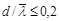
и во всех других случаях, когда по
формуле (3) значение coswt > 1, необходимо в
дальнейших расчетах принимать coswt = 1.
1.3. В глубоководной зоне горизонтальную линейную нагрузку на
вертикальную стену Рх, кН/м, при гребне или ложбине стоячей волны (см. рис. 1) необходимо принимать по
эпюре волнового давления, при этом величина р, кПа, на глубине z, м, должна определяться по формуле
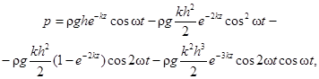
(4)
где r -
плотность воды, т/м3;
g - ускорение свободного
падения, равное 9,81 м/с2;
z - ординаты точек (z1 = hс; z2 = 0; ... zn = d), м, отсчитываемые от расчетного уровня.
Для гребня при z1 = hс, а для ложбины при z6 = 0
следует принимать р = 0.
1.4. В мелководной зоне горизонтальную линейную нагрузку на
вертикальную стену Рх, кН/м,
при гребне и ложбине стоячей волны (см. рис. 1)
необходимо принимать по эпюре волнового давления, при этом величина p, кПа, на глубине z, м,
должна определяться по табл. 1.
Таблица 1
|
№ точек
|
Заглубление точек z, м
|
Значение волнового
давления р, кПа
|
|
При гребне
|
|
1
|
hc
|
p1 = 0
|
|
2
|
0
|
р2 = k2rgh
|
|
3
|
0,25d
|
р3 = k3rgh
|
|
4
|
0,5d
|
р4 = k4rgh
|
|
5
|
d
|
р5 = k5rgh
|
|
При ложбине
|
|
6
|
0
|
p6 = 0
|
|
7
|
ht
|
p7 = -rght
|
|
8
|
0,5d
|
p8 = -k8rght
|
|
9
|
d
|
p9 = -k9rght
|
|
Примечание. Значения
коэффициентов k2, k3, k4, k5, k8 и k9 следует принимать по
графикам рис. 3, 4, 5.
|
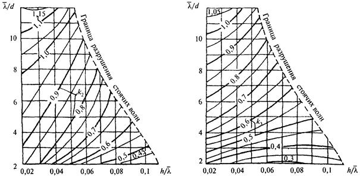
Рис.
3. Графики значений коэффициентов k2 и k3
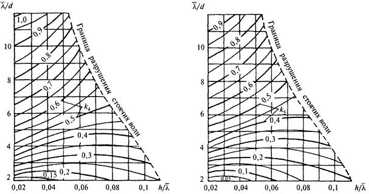
Рис.
4. Графики значений коэффициентов k4 и k5
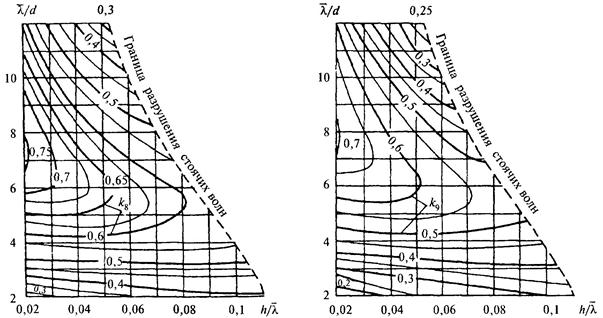
Рис.
5. Графики значений коэффициентов k8 и k9
1.5*. Волновое давление р, кПа, на вертикальную стену с
возвышением над расчетным уровнем верха сооружения zsup, м,
на величину менее hmax, м, следует
определять согласно пп. 1.3 и 1.4 с последующим умножением полученных
значений давления на коэффициент kс, определяемый
по формуле
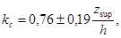
(5)
где
знаки «плюс» и «минус» соответствуют положению верха сооружения выше или ниже
расчетного уровня воды.
Возвышение или понижение свободной волновой поверхности h, определенное
по п. 1.2, следует также умножать на
коэффициент kс.
Горизонтальная линейная волновая нагрузка Рхс, кН/м, в рассматриваемом случае должна определяться по площади
эпюры волнового давления в пределах высоты вертикальной стены.
1.6. При подходе фронта волны к сооружению под углом a,
град, со стороны открытой акватории (в расчетах устойчивости сооружения и
прочности грунтов основания) линейную волновую нагрузку на вертикальную стену,
определенную согласно пп. 1.3 и 1.4, необходимо уменьшать путем
умножения ее на коэффициент kcs, принимаемый
равным:
|
a, град
|
kcs
|
|
45
|
1
|
|
60
|
0,9
|
|
75
|
0,7
|
Примечание. При перемещении
фронта волн вдоль стены, т.е. для a, близких или равных 90 град, волновую нагрузку на секцию
сооружения следует определять согласно п. 1.7.
1.7. Горизонтальную нагрузку от дифрагированных волн со стороны
огражденной акватории следует определять при относительной длине секции
сооружения 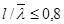
; при этом
расчетную эпюру волнового давления со значениями р, кПа, допускается
выполнять по трем точкам, рассматривая следующие случаи:
а) вершина волны совмещена с серединой секции сооружения (рис. 6, а):
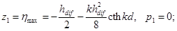
(6)
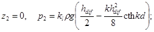
(7)
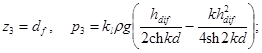
(8)
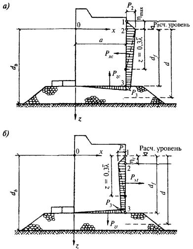
Рис. 6. Эпюры давления дифрагированных волн на вертикальную стену со стороны огражденной акватории
а - при гребне волны; б - при ложбине волны
б) подошва волны совмещена с серединой секции сооружения (рис. 6, б):
z1 = 0, р1 = 0; (9)
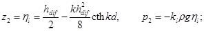
(10)
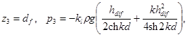
(11)
где hdif -
высота дифрагированной волны, м, определяемая согласно обязательному прил. 1;
kl - коэффициент,
принимаемый по табл. 2.
Таблица 2
|
Относительная
длина секции 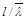
|
0,1
|
0,2
|
0,3
|
0,4
|
0,5
|
0,6
|
0,7
|
0,8
|
|
Коэффициент kl
|
0,98
|
0,92
|
0,85
|
0,76
|
0,64
|
0,51
|
0,38
|
0,26
|
Примечание. При глубине со
стороны огражденной акватории 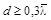
следует строить треугольную эпюру волнового
давления, принимая на глубине 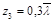
волновое
давление равным нулю (см. рис. 6).
1.8. Взвешивающее волновое давление в горизонтальных швах массивовой
кладки и по подошве сооружения следует принимать равным соответствующим
величинам горизонтального волнового давления в крайних точках (см. рис. 1 и 6) при линейном изменении его в пределах ширины сооружения.
1.9. Максимальную донную скорость vb,max,
м/с, перед вертикальной стеной (от действия стоячих волн) на расстоянии 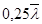
от передней грани стены необходимо
определять по формуле
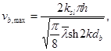
(12)
где ksl - коэффициент,
принимаемый по табл. 3.
Таблица 3
Допускаемые значения неразмывающих донных скоростей vb,adm, м/с,
для грунта крупностью фракций D, мм, следует
принимать по рис. 7; при vb,max
> vb,adm необходимо предусматривать защиту от размыва основания.
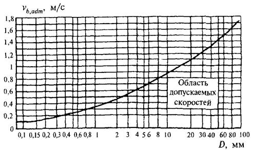
Рис. 7. График допускаемых значений неразмывающих донных скоростей
1.10. Эпюра взвешивающего волнового давления на берменные массивы должна приниматься трапецеидальной, согласно
рис. 1, б, с ординатами pbr,i, кПа, определяемыми (при i = 1, 2 или 3) по формуле
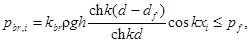
(13)
где xi -
расстояние от стены до соответствующей грани массива, м;
kbr -
коэффициент, принимаемый по табл. 4;
pf -
волновое давление на уровне подошвы сооружения.
Таблица 4
|
Относительная глубина 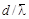
|
Коэффициент kbr при пологостях
волн 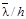
|
|
15 и менее
|
20 и более
|
|
Менее 0,27
|
0,86
|
0,64
|
|
От 0,27 до 0,32
|
0,6
|
0,44
|
|
Более 0,32
|
0,3
|
0,3
|
1.11. Расчет сооружений на
воздействие разбивающихся волн со стороны открытой акватории должен
производиться при глубине над бермой dbr
< 1,25h и глубине до дна db ≥
1,5h (рис. 8).
Горизонтальную линейную нагрузку Рxc, кН/м,
от разбивающихся волн необходимо принимать по площади эпюры бокового волнового
давления, при этом величины р, кПа, для значений ординат z, м, следует определять по формулам:
z1 = -h, р1 = 0; (14)
z2 = 0, p2 = 1,5rgh; (15)
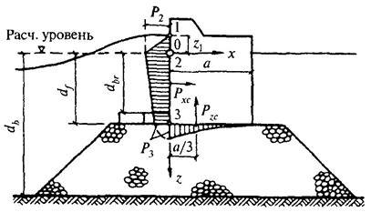
Рис. 8. Эпюры давления разбивающихся волн на вертикальную стену
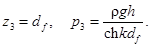
(16)
Вертикальную линейную нагрузку Pzc, кН/м,
от разбивающихся волн следует принимать равной площади эпюры взвешивающего
волнового давления и определять по формуле
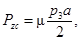
(17)
где m - коэффициент,
принимаемый по табл. 5.
Таблица 5
Максимальную скорость воды vf,max, м/с, над поверхностью бермы перед вертикальной стеной при разбивающихся
волнах необходимо определять по формуле
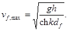
(18)
1.12. Расчет сооружений на воздействие
прибойных волн со стороны открытой акватории должен производиться при глубине db ≤
dcr на
примыкающем к стене участке дна протяженностью не менее 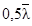
, м (рис. 9),
при этом возвышение вершины максимальной прибойной волны hc,sur, м,
над расчетным уровнем следует определять по формуле
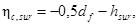
(19)
где hsur - высота
прибойной волны, м;
dcr - критическая
глубина, м.
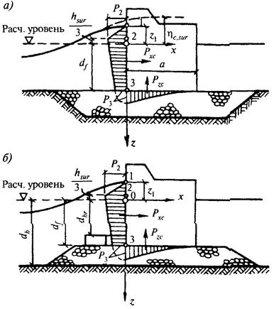
Рис. 9. Эпюры давления прибойных волн на
вертикальную стену
а - с верхом постели на уровне дна; б - с возвышающейся над
дном постелью
Горизонтальную линейную нагрузку Рxc, кН/м, от прибойных волн необходимо принимать по площади эпюры
бокового волнового давления, при этом величины р, кПа, для значений
ординат z, м,
должны определяться по формулам:
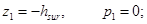
(20)
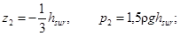
(21)
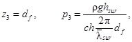
(22)
где 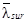
- средняя длина
прибойной волны, м.
Вертикальную линейную нагрузку Рzc, кН/м, от прибойных волн
следует принимать равной площади эпюры взвешивающего волнового давления (с высотой р3) и определять по формуле
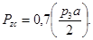
(23)
Максимальная донная скорость прибойной волны vb,max,
м/с, перед вертикальной стеной со стороны открытой акватории должна
определяться по формуле
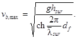
(24)
1.13. Определение нагрузок на вертикальную стену от воздействия
разбивающихся и прибойных волн (см. рис. 8
и 9) при надлежащем обосновании
допускается производить динамическими методами, учитывающими импульсы давления
и инерционные силы.
1.14*. Высоту наката на откос волн
обеспеченностью 1 % по накату (hrun1%, м)
для фронтально подходящих волн при глубине перед сооружением d ≥ 2h1% надлежит
определять по формуле
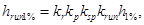
(25)
где kr и kp - коэффициенты
шероховатости и проницаемости откоса, принимаемые по табл. 6;
ksp - коэффициент,
принимаемый по табл. 7*;
krun - коэффициент,
принимаемый по графикам рис. 10* в
зависимости от пологости волны 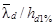
на глубокой воде.
При глубине перед сооружением d
< 2h1% коэффициент
krun необходимо
принимать для значений пологости волны, указанной на рис. 10* в скобках и определяемой при глубине d = 2h1%.
Высоту наката на откос волн обеспеченностью i, %, по накату необходимо определять умножением полученного по
формуле (25) значения hrun1%, м, на коэффициент ki, принимаемый по табл. 8.
При подходе фронта волны к сооружению под углом a,
град, со стороны открытой акватории величину наката волн на откос следует
уменьшать умножением на коэффициент ka, принимаемый
по табл. 9.
Таблица 6
|
Конструкция крепления откоса
|
Относительная
шероховатость
r/h1%
|
Коэффициент kr
|
Коэффициент kp
|
|
Бетонными
(железобетонными) плитами
|
-
|
1
|
0,9
|
|
Гравийно-галечниковое,
каменное или крепление бетонными (железобетонными) блоками
|
Менее 0,002
|
1
|
0,9
|
|
0,005 - 0,01
|
0,95
|
0,85
|
|
0,02
|
0,9
|
0,8
|
|
0,05
|
0,8
|
0,7
|
|
0,1
|
0,75
|
0,6
|
|
Более 0,2
|
0,7
|
0,5
|
|
Примечание. Характерный размер
шероховатости r, м, следует
принимать равным среднему диаметру зерен материала крепления откоса или
среднему размеру бетонных (железобетонных) блоков.
|
Таблица 7*
|
Значение ctgj
|
1 - 2
|
3 - 5
|
Более 5
|
|
Коэффициент ksp при скорости ветра Vw, м/с:
|
|
|
|
|
20 и
более
|
1,4
|
1,5
|
1,6
|
|
10
|
1,1
|
1,1
|
1,2
|
|
5 и
менее
|
1
|
0,8
|
0,6
|
|
Примечание. j - угол наклона откоса к горизонту, град.
|
Таблица 8
Таблица 9
|
Значение
угла a, град
|
0
|
10
|
20
|
30
|
40
|
50
|
60
|
|
Коэффициент ka
|
1
|
0,98
|
0,96
|
0,92
|
0,87
|
0,82
|
0,76
|
Примечание. При определении
высоты наката волн на песчаные и гравийно-галечниковые
пляжи необходимо учитывать изменение уклона пляжа во время шторма. Наибольшее
понижение пляжа в створе уреза воды следует принимать равным 0,3h, м, с
выклиниванием на нулевые значения на берегу до высоты наибольшего наката, а в
море до глубины d = dcr, м, для размываемых
грунтов или на глубине d = dcr,u, м, - для
неразмываемых грунтов (где h, dcr и dcr,u - соответственно
высота волны и глубина воды в створах первого и последнего обрушений, м).
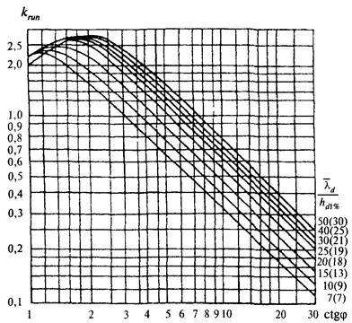
Рис. 10*. Графики значений коэффициента krun
1.15. Эпюра волнового давления на откос при 1,5 ≤ ctgj ≤
5, укрепленный монолитными или сборными плитами, должна приниматься по рис. 11, при этом максимальное расчетное
волновое давление pd, кПа,
необходимо определять по формуле
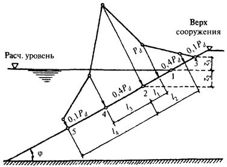
Рис. 11. Эпюра максимального
расчетного волнового давления на откос, укрепленный плитами
(26)
где ks -
коэффициент, определяемый по формуле
(27)
kf -
коэффициент, принимаемый по табл. 10;
Таблица 10
prel - максимальное
относительное волновое давление на откос в точке 2 (см. рис. 11), принимаемое по табл. 11.
Таблица 11
|
Высота
волны h, м
|
0,5
|
1
|
1,5
|
2
|
2,5
|
3
|
3,5
|
≥ 4
|
|
Максимальное
относительное волновое давление prel
|
3,7
|
2,8
|
2,3
|
2,1
|
1,9
|
1,8
|
1,75
|
1,7
|
Ордината z2, м, точки 2 приложения максимального расчетного волнового
давления pd должна
определяться по формуле
(28)
где А и В - величины, м, определяемые
по формулам:
(29)
(30)
Ордината z3, м, соответствующая высоте наката волн на
откос, должна определяться согласно п. 1.14*.
На участках крепления по откосу выше и ниже точки 2 (см. рис. 11) следует принимать значения ординат
эпюры волнового давления р, кПа, на расстояниях, м:
при l1 =
0,0125Lj и l3 =
0,0265Lj р
= 0,4pd;
при l2 = 0,0325Lj и l4 = 0,0675Lj р
= 0,1pd,
где
(31)
Ординаты эпюры волнового противодавления рс, кПа,
на плиты крепления откосов следует определять по формуле
(32)
где pc,rel - относительное
волновое противодавление, принимаемое по графикам рис. 12.
Рис. 12. Графики для определения
относительного волнового противодавления
1.16. Нагрузку от волн на откос, укрепленный плитами, для сооружений I и II классов при высоте волн
более 1,5 м обеспеченностью 1 % в системе допускается при надлежащем
обосновании определять методами, в которых учитывается нерегулярность ветровых
волн.
При наличии берм и переменных уклонов отдельных участков
сооружений откосного профиля нагрузки от волн на крепления откосов необходимо
определять по данным лабораторных исследований.
1.17*. При проектировании сооружений откосного
профиля и креплений откосов из рваного камня, обыкновенных и фасонных бетонных
или железобетонных блоков массу отдельного элемента т или mz, т, соответствующую состоянию его
предельного равновесия от действия ветровых волн, необходимо определять:
при расположении камня или блока на участке откоса от верха
сооружения до глубины z = 0,7h по формуле
(33)*
то же, при z
> 0,7h по формуле
(34)
где kfr - коэффициент, принимаемый по табл. 12*; при , а также при
наличии бермы kfr следует уточнять по опытным данным;
rт -
плотность камня, т/м3.
Таблица 12*
|
Элементы крепления
|
Коэффициент kfr
|
|
при наброске
|
при укладке
|
|
Камень
|
0,025
|
-
|
|
Обыкновенные
бетонные блоки
|
0,021
|
-
|
|
Тетраподы и другие
фигурные блоки
|
0,008
|
0,006
|
1.18. При проектировании крепления откосов сооружений из несортированной
каменной наброски необходимо, чтобы значение коэффициента kgr зернового состава находилось в границах заштрихованной зоны,
приведенной на графике рис. 13.
Значение коэффициента kgr должно определяться по формуле
(35)
где m - масса камня, определяемая по п. 1.17*, т;
mi - масса камня, большая или меньшая расчетной, т;
Dba,i и Dba - диаметры
фракций камня, см, приведенные к диаметру шара, имеющего массу соответственно mi и т.
Зерновой состав несортированной каменной наброски для крепления
откосов, соответствующий заштрихованной зоне (см. рис. 13), следует считать пригодным только для сооружений с
откосами, пологость которых находится в пределах 3 ≤ ctgj ≤ 5, а высота расчетной волны - 3 м и менее.
Рис. 13. График для определения допустимого зернового состава
несортированной каменной наброски для крепления откосов
1.19*. При пологости откосов ctgj > 5, укрепляемых несортированной разнозернистой каменной
наброской, расчетную массу камня m, т,
соответствующую состоянию его предельного равновесия от действия ветровых волн,
необходимо определять по формуле (33*) при с умножением полученных результатов на
коэффициент kj, определяемый
по табл. 12а*.
Таблица 12а*
|
ctgj
|
6
|
8
|
10
|
12
|
15
|
|
Коэффициент kj
при
|
0,78
|
0,52
|
0,43
|
0,25
|
0,2
|
Минимальное содержание фракций диаметром Dba, соответствующим
расчетной массе камня в несортированной разнозернистой наброске, должно
приниматься в соответствии с табл. 12б*.
Таблица 12б*
2.1. Максимальную силу от воздействия волн Qmax, кН, на вертикальную обтекаемую преграду с поперечными
размерами а ≤ 0,4l и b ≤
0,4l (рис. 14, а) при d > dcr необходимо
определять из ряда значений, получаемых при различных положениях преграды
относительно вершины волны æ = x/l, по формуле
(36)
где Qi,max и Qv,max -
соответственно инерционный и скоростной компоненты силы от воздействия волн,
кН, определяемые по формулам:
(37)
(38)
di и dv -
коэффициенты сочетания инерционного и скоростного компонентов максимальной силы
от воздействия волн, принимаемые соответственно по графикам 1 и 2 рис. 15;
Рис. 14. Схемы к определению волновых нагрузок на обтекаемые преграды
а - вертикальные; б
- горизонтальные
Рис. 15. Графики значений коэффициентов сочетания инерционного di
(графики 1) и скоростного bv (графики 2) компонентов силы от воздействия волн
h и l -
высота и длина расчетной волны, принимаемые согласно п. 4 обязательного прил. 1;
а - размер преграды по лучу волны, м;
b - размер преграды по нормали к лучу волны, м;
kv - коэффициент, принимаемый по табл. 13;
ai и av - инерционный
и скоростной коэффициенты глубины, принимаемые соответственно по графикам а и б рис. 16;
bi и bv -
инерционный и скоростной коэффициенты формы преграды с поперечным сечением в
виде круга, эллипса и прямоугольника, принимаемые по графикам рис. 17.
Таблица 13
|
Относительный
размер преграды а/l, b/l, D/l
|
0,05
|
0,1
|
0,15
|
0,2
|
0,25
|
0,3
|
0,4
|
|
Коэффициент kv
|
1
|
0,97
|
0,93
|
0,86
|
0,79
|
0,7
|
0,52
|
Примечания: 1. Расчет сквозных
сооружений или отдельно стоящих обтекаемых преград на нагрузки от волн должен
производиться, как правило, с учетом шероховатости их поверхности. При наличии
опытных данных по снижению влияния коррозии и морских обрастаний коэффициенты
формы необходимо определять по формулам:
(39)
(40)
где Ci и Cv - уточненные опытные
значения коэффициентов инерционного и скоростного сопротивлений.
2. При
подходе волн под углом к обтекаемой преграде (в виде эллипса или
прямоугольника) допускается коэффициенты формы определять интерполяцией между
их значениями по главным осям.
3. Максимальную силу от воздействия волн Qmax, кН, на вертикальную
обтекаемую преграду при значении допускается принимать Qmax = Qi,max, а при значении принимать Qmax = Qv,max; в других случаях Qmax следует определять из
ряда значений, полученных по формуле (36)
при различных æ.
2.2. Линейную нагрузку от волн q, кН/м,
на вертикальную обтекаемую преграду на глубине z, м,
при максимальной силе от воздействия волн Qmax
(см. рис. 14, а)
необходимо определять по формуле
(41)
Рис.
16. Графики значений инерционного ai и скоростного av коэффициентов глубины
Рис. 17. Графики значений инерционного bi и
скоростного bv
коэффициентов формы (для эллиптических преград - сплошные линии, призматических
- штриховые линии) в зависимости от а/b (для Q, q и Рх) или b/а (для Pz)
1 - для шероховатой
эллиптической преграды; 2 - гладкой; 3 - шероховатой в подводной
и гладкой в надводной частях вертикальной эллиптической преграды
Рис. 18. Графики значений коэффициентов сочетания инерционного dхi (графики
1) и скоростного dхv (графики 2) компонентов горизонтальной линейной нагрузки от волн
где qi,max и qv,max - инерционный и скоростной
компоненты максимальной линейной нагрузки от
волн, кН/м, определяемые
по формулам:
(42)
(43)
dxi и dxv -
коэффициенты сочетания инерционного и скоростного компонентов линейной нагрузки
от волн, принимаемые соответственно по графикам 1 и 2 рис.
18 при значении
æ согласно п. 2.1;
qxi и qxv -
коэффициенты линейной нагрузки от волн, принимаемые по графикам а и б
рис. 19 при значениях относительной глубины
Рис. 19. Графики коэффициентов линейной нагрузки от волн qxi, qxv, qzi, qzv, при d/l:
1) 0,1; 2) 0,15; 3) 0,2; 4) 0,3; 5) 0,5; 6)
1; 7) 5 и l/h = 40 - сплошные
линии; l/h = 8 - 15 -
штриховые линии
2.3. Превышение взволнованной поверхности h, м, над расчетным уровнем должно определяться по формуле
(44)
где hrel - относительное превышение взволнованной поверхности, определяемое
по рис. 20.
Рис. 20.
Графики значений коэффициента hrel
1 - при d/l = 0,5 и l/h = 40; 2 - при d/l = 0,5 и l/h = 20, а также при d/l = 0,2 и l/h = 40; 3
- при d/l = 0,5 и l/h = 10, а также при d/l = 0,2 и
l/h = 20; 4
- при d/l = 0,2 и l/h = 10
Превышение средней волновой линии над расчетным уровнем Dd, м, следует определять по формуле
(45)
где hс,rel - относительное превышение вершины волны, определяемое по
рис. 20 при значении æ = 0.
2.4. Нагрузки от волн Q и q на
вертикальную обтекаемую преграду при любом ее расположении х, м,
относительно вершины волны следует определять по формулам (36) и (41), при этом коэффициенты di и dv
должны приниматься по графикам 1 и 2 рис. 15, а dxi и dxv -
по графикам 1 и 2 рис. 18 для
данного значения æ = х/l.
2.5. Расстояние zQ,max, м,
от расчетного уровня воды до точки приложения максимальной силы от воздействия
волн на вертикальную обтекаемую преграду Qmax необходимо определять по формуле
(46)
где di и dv -
коэффициенты, принимаемые по графикам 1 и 2 рис. 15 при æ, соответствующем Qmax;
zQ,i и zQ,v -
ординаты точек приложения
соответственно инерционного и скоростного компонентов сил, м, определяемые по
формулам:
(47)
(48)
где
ζi,rel и
ζv,rel - относительные ординаты точек приложения инерционного и
скоростного компонентов сил, принимаемые по графикам рис. 21;
mi и mv - инерционный и скоростной коэффициенты фазы, принимаемые по
графикам рис. 22.
Рис.
21. Графики значений относительных ординат
1 - ζi,rel; 2 - ζv,rel
Рис. 22. Графики значений инерционного mi и
скоростного mv коэффициентов фазы
Расстояние zQ от расчетного уровня воды до точки приложения силы Q при любом удалении х от вершины волны до преграды следует определять по формуле
(46), при этом коэффициенты di и dv
должны приниматься согласно графикам 1 и 2 рис. 15 для данного значения æ = х/l.
2.6. Максимальное значение равнодействующей линейной нагрузки от волн Рmax, кН/м,
на горизонтальную обтекаемую преграду (см. рис. 14, б) с поперечными размерами а ≤ 0,1l, м, и
b ≤ 0,1l, м,
при zc ≥
b, но (zc - b/2) > h/2 и
при (d - zc) ≥ b должно определяться по
формуле
(49)
для двух случаев:
с максимальной горизонтальной составляющей линейной нагрузки Рх,max, кН/м,
при соответствующем значении вертикальной составляющей
линейной нагрузки Pz, кН/м;
с максимальной вертикальной составляющей линейной нагрузки Pz,max, кН/м,
при соответствующем значении горизонтальной составляющей линейной нагрузки Рх, кН/м.
Расстояние х, м, от
вершины волны до центра преграды при действии максимальных линейных нагрузок Рх,max и Pz,max должно определяться по относительной величине æ = x/l, принимаемой согласно рис. 18
и 23.
2.7. Максимальное значение горизонтальной составляющей линейной
нагрузки от волн Рх,max, кН/м,
на горизонтальную обтекаемую преграду необходимо определять из ряда величин,
получаемых при различных значениях æ, по формуле
(50)
где Pxi и Рxv - инерционный и скоростной компоненты горизонтальной
составляющей линейной нагрузки от волн, кН/м, определяемые по формулам:
(51)
(52)
dxi и dxv - коэффициенты сочетания инерционного и
скоростного компонентов линейной нагрузки от волн, принимаемые соответственно
по графикам 1 и 2 рис. 18 при значении æ согласно п. 2.1;
qxi и qxv - обозначения те же, что и в п. 2.2;
bi и bv - инерционный
и скоростной коэффициенты формы преграды с поперечным сечением в виде круга, эллипса и прямоугольника,
принимаемые по графикам рис. 17 при
значениях а/b - для
горизонтальной и b/а - для
вертикальной составляющих нагрузки.
Рис. 23. Графики значений коэффициентов сочетания dzi инерционного (графики 1) и dzv -
скоростного (графики 2) компонентов вертикальной линейной нагрузки от волн
2.8. Максимальную величину вертикальной составляющей линейной нагрузки
от волн на горизонтальную обтекаемую преграду Рz,max,
кН/м, необходимо определять из ряда величин, получаемых при разных значениях
æ, по формуле
(53)
где Pzi и Pzv - инерционный и скоростной компоненты вертикальной составляющей
линейной нагрузки от волн, кН/м, определяемые по формулам:
(54)
(55)
dzi и dzv -
инерционный и скоростной коэффициенты сочетания, принимаемые по графикам 1 и 2
рис. 23 при значении æ
согласно п. 2.1;
qzi и qzv - коэффициенты линейной нагрузки от волн, принимаемые
соответственно по графикам в и г рис. 19 при значениях относительной
ординаты
bi и bv -
обозначения те же, что и в п. 2.7.
2.9. Значение горизонтальной Рх, кН/м,
или вертикальной Рz, кН/м,
составляющих линейной нагрузки от волн на горизонтальную обтекаемую преграду
при любом ее расположении х относительно вершины волны следует
определять соответственно по формуле (50)
или (53),
при этом коэффициенты сочетания dxi, dxv или dzi, dzv должны
приниматься по графикам рис. 18 и 23 для заданного значения
æ = х/l.
2.10. Максимальное значение равнодействующей линейной нагрузки от волн Рmax, кН/м,
на лежащую на дне цилиндрическую преграду (см. рис. 14, б), диаметр которой D ≤ 0,1l, м, и D ≤ 0,1d, м, должно определяться по формуле (49) для двух случаев:
с максимальной горизонтальной составляющей линейной нагрузки Рх,max, кН/м,
при соответствующем значении вертикальной составляющей
линейной нагрузки Рz, кН/м;
с максимальной вертикальной составляющей линейной нагрузки Pz,max, кН/м,
при соответствующем значении горизонтальной составляющей линейной нагрузки Рx, кН/м.
2.11. Максимальную горизонтальную
Рх,max, кН/м,
и соответствующую вертикальную Рz, кН/м,
проекции линейной нагрузки от волн, действующих на лежащую на дне
цилиндрическую преграду, необходимо определять по формулам:
(56)
(57)
где Pxi и Рxv - соответственно
инерционный и скоростной компоненты горизонтальной составляющей линейной
нагрузки от волн, кН/м, определяемые по формулам:
(58)
(59)
dxi и dxv, qxi и qxv - обозначения те же, что и в п. 2.7.
Максимальную вертикальную Рz,max, кН/м,
и соответствующую горизонтальную Рх, кН/м,
проекции линейной нагрузки от волн необходимо принимать равными и Px = Pxv.
2.12. Максимальную силу от воздействия разбивающихся (разрушающихся)
волн Qcr,max, кН,
на вертикальную цилиндрическую преграду, диаметр которой D ≤ 0,4dcr, м, необходимо определять по отдельным значениям силы от
воздействий волн Qcr, кН,
полученным для ряда положений преграды относительно вершины волны (рис. 24, а) с интервалом начиная с и (где x - расстояние, м, от вершины разбивающейся
волны до оси вертикальной цилиндрической преграды).
Сила от воздействия волн Qcr, кН,
для любого положения цилиндрической преграды относительно вершины волны должна
определяться по формуле
(60)
где Qi,cr и Qv,cr - инерционный
и скоростной компоненты силы от воздействия разбивающихся волн, кН,
определяемые по формулам:
(61)
(62)
где di -
глубина воды под подошвой волны, м, принимаемая равной (см. рис. 24, а):
(63)
hsur - высота
(трансформированной) волны, м, при первом обрушении в мелководной зоне с
соблюдением условия hsur ≤ 0,8di;
hc,sur - превышение
над расчетным уровнем воды вершины (при первом обрушении) волны, м;
di,cr и dv,cr -
инерционный и скоростной коэффициенты, принимаемые по графикам рис. 24, б.
Рис. 24. Схема к определению нагрузок от разбивающихся волн и графики
значений коэффициентов di,cr - кривая
1 и dv,cr - кривая 2
2.13. Линейную нагрузку от разбивающихся волн qcr, кН/м,
на вертикальную цилиндрическую преграду на глубине z, м,
от расчетного уровня (см. рис. 24, а)
при относительном удалении оси преграды от вершины волны необходимо определять по формуле
(64)
где qi,cr и qv,cr - инерционный
и скоростной компоненты линейной нагрузки от разбивающихся волн на вертикальную
преграду, кН/м, определяемые по формулам:
(65)
(66)
где ei,cr и ev,cr - инерционный и скоростной коэффициенты, принимаемые
соответственно по графикам а и б рис. 25 при значениях относительной глубины
Примечание. Коэффициенты di,cr (рис. 24, б) и ei,cr (рис. 25, а) следует принимать
положительными при x/di > 0 и отрицательными
при x/di < 0.
Рис.
25. Графики значений инерционного ei,cr и скоростного ev,cr коэффициентов
2.14. Нагрузку от волн на сквозное сооружение
в виде стержневой системы необходимо получать суммированием нагрузок,
определенных согласно пп. 2.1 - 2.9 как на отдельно стоящие
преграды с учетом положения каждого элемента относительно профиля расчетной
волны. Элементы сооружения следует принимать как отдельно стоящие обтекаемые
преграды при расстояниях между их осями l, м,
равных и более трех диаметров D, м;
при l
< 3D (где D - наибольший
диаметр элемента) волновую нагрузку, полученную на отдельно стоящий элемент
сооружения, необходимо умножать на коэффициенты сближения по фронту ψt и
лучу ψl волн, принимаемые по табл. 14.
Таблица 14
|
Относительное расстояние между осями преград l/D
|
Коэффициенты
сближения ψt и ψl при значениях
относительных диаметров D/l
|
|
ψt
|
ψl
|
|
0,1
|
0,05
|
0,1
|
0,05
|
|
3
|
1
|
1
|
1
|
1
|
|
2,5
|
1
|
1,05
|
1
|
0,98
|
|
2
|
1,04
|
1,15
|
0,97
|
0,92
|
|
1,5
|
1,2
|
1,4
|
0,87
|
0,8
|
|
1,25
|
1,4
|
1,65
|
0,72
|
0,68
|
2.15.
Нагрузки от волн на наклонный элемент сквозного сооружения необходимо получать
по эпюрам горизонтальной и вертикальной составляющих нагрузки, ординаты которых
должны определяться согласно п. 2.9 с
учетом заглубления под расчетный уровень и удаления от вершины расчетной волны
отдельных участков элемента.
Примечание. Нагрузку от волн на
элементы сооружения, наклоненные к горизонтали или вертикали под углом менее
25°, допускается определять соответственно по пп. 2.4 и 2.9 как
на вертикальную или горизонтальную обтекаемую преграду.
2.16. Динамическую нагрузку от воздействия нерегулярных ветровых волн
на сквозное сооружение из обтекаемых элементов следует определять умножением
значения статической нагрузки, полученной согласно пп. 2.14 и 2.15
от волн с высотой заданной обеспеченности в системе и средней длиной, на
коэффициент динамичности kd, принимаемый
по табл. 15.
При отношениях периодов необходимо выполнять динамический расчет
сооружения.
Таблица 15
|
Отношение
периодов
|
0,01
|
0,1
|
0,2
|
0,3
|
|
Коэффициент
динамичности kd
|
1
|
1,15
|
1,2
|
1,3
|
|
Тс - период
собственных колебаний сооружения, с;
- средний период волны, с.
|
2.17*. Максимальный опрокидывающий момент Мz,por, кН
· м, от волнового давления на сплошное днище вертикальной круглоцилиндрической
преграды, расположенной на гравийно-галечниковом или каменнонабросном
основании, относительно центра днища следует определять по формуле
(66а)*
где bpor -
коэффициент опрокидывающего момента с учетом проницаемости основания,
принимаемый по табл. 15а*.
Таблица 15а*
|
d/l
|
Значение
коэффициента bpor при D/l
|
|
0,2
|
0,25
|
0,3
|
0,4
|
|
0,12
|
0,67
|
0,76
|
0,82
|
0,81
|
|
0,15
|
0,59
|
0,68
|
0,73
|
0,73
|
|
0,2
|
0,46
|
0,52
|
0,57
|
0,56
|
|
0,25
|
0,35
|
0,42
|
0,44
|
0,42
|
|
0,3
|
0,26
|
0,29
|
0,32
|
0,32
|
|
0,4
|
0,14
|
0,15
|
0,17
|
0,17
|
|
0,5
|
0,07
|
0,08
|
0,09
|
0,09
|
Полный максимальный опрокидывающий момент, действующий на
преграду, определяется как сумма двух моментов: момента от максимальной силы Qmax, равного
произведению этой силы, определяемой по п. 2.1, на плечо, определяемое по п. 2.5, и максимального момента, определяемого по формуле (66а)* и совпадающего по фазе с
максимальной силой Qmax.
2.18*. Волновое давление р, кПа, в точке поверхности вертикальной
круглоцилиндрической преграды на глубине z ≥ 0 в
момент максимума горизонтальной силы Qmax необходимо определять по формуле
(66б)*
где χ - коэффициент распределения давления, принимаемый по табл. 15б*.
Таблица 15б*
|
q, град
|
Значение
коэффициента χ при D/l
|
|
0,2
|
0,3
|
0,4
|
|
0
|
0,73
|
0,85
|
0,86
|
|
15
|
0,7
|
0,83
|
0,85
|
|
30
|
0,68
|
0,81
|
0,84
|
|
45
|
0,6
|
0,74
|
0,8
|
|
60
|
0,5
|
0,65
|
0,7
|
|
75
|
0,35
|
0,51
|
0,55
|
|
90
|
0,22
|
0,34
|
0,34
|
|
105
|
0,03
|
0,11
|
0,1
|
|
120
|
-0,09
|
-0,08
|
-0,1
|
|
135
|
-0,23
|
-0,23
|
-0,23
|
|
150
|
-0,32
|
-0,36
|
-0,33
|
|
165
|
-0,37
|
-0,42
|
-0,38
|
|
180
|
-0,41
|
-0,45
|
-0,4
|
|
q - угол между лучом
набегающей волны и направлением на рассматриваемую точку из центра преграды
(для передней образующей цилиндра q = 0).
|
Давление р в точках, лежащих выше расчетного уровня воды (z < 0), при χ > 0 принимается по линейному
закону между р на уровне z =
0, определяемым по формуле (66б)*, и р = 0 на уровне z = -χh; а
при χ < 0 для точек на глубине 0 ≤
z ≤ -χh - также по линейному закону между р = 0 при z = 0 и р, определяемым по формуле (66б)* при z = -χh.
2.19*. Максимальную донную скорость vb,max,
м/с, в точках, расположенных на контуре преграды (q = 90° и 270°) и
впереди преграды на расстоянии 0,25l от контура преграды (q =
0°),
следует определять по формуле
(66в)
где
коэффициент jv
принимается по табл. 15в*.
Таблица 15в*
|
Положение расчетных точек
|
Значения
коэффициента jv при D/l
|
|
0,2
|
0,3
|
0,4
|
|
На контуре преграды
|
0,98
|
0,87
|
0,77
|
|
Впереди преграды
|
0,67
|
0,75
|
0,75
|
3.1. Максимальные значения горизонтальной Рх, кН/м,
и вертикальных Pz и Рс, кН/м,
проекций равнодействующей линейной нагрузки от волн на подводный волнолом при
ложбине волны необходимо принимать по эпюрам бокового и взвешивающего волнового
давления (рис. 26), при этом p, кПа, должно определяться в зависимости от z с учетом
уклона дна i по
формулам:
Рис. 26. Эпюры волнового давления на подводный волнолом
а) при уклоне дна i ≤
0,04:
z = z1 при
z1
< z2, p1 = rg(z1 - z4); (67)
при z1 ≥
z2, p1 = p2; (68)
z = z2, (69)
z = z3 = d, р3 = kwp2; (70)
б) при уклоне дна i
> 0,04:
z = z1, p1 определяется
по формулам (67)
и (68);
z = z2, p2 = rg(z2 - z4); (71)
z = z3 = d, p3 = p2, (72)
где z1 -
ордината верха сооружения, м;
z2 - ордината
подошвы волны, м, по табл. 16;
kw - коэффициент,
принимаемый по табл. 17;
z4 - ордината
поверхности воды за подводным волноломом, м, определяемая по формуле
(73)
krd -
коэффициент, принимаемый по табл. 16;
z5 -
ордината гребня волны перед подводным волноломом, м, принимаемая по табл. 16.
3.2. Максимальную донную скорость vb,max,
м/с, перед берегоукрепительным сооружением необходимо определять по формуле (12), где коэффициент ksl принимается:
а) для вертикальной или круглонаклонной стены по табл. 3;
б) для подводного волнолома по табл. 18.
Максимальную донную скорость воды vb,max, м/с, перед берегоукрепительным сооружением при разбивающихся и
прибойных волнах надлежит определять соответственно по формулам (18) и (24).
Допускаемые значения неразмывающих донных скоростей должны
приниматься согласно п. 1.9.
3.3. Максимальные значения горизонтальной Рх, кН/м,
и вертикальной Рz, кН/м,
проекций равнодействующей линейной нагрузки от разбивающихся и разрушающихся
волн на вертикальную волнозащитную стену (при отсутствии засыпки грунта со
стороны берега) необходимо принимать по эпюрам бокового и взвешивающего
волнового давлений (рис. 27), при
этом значения p, кПа, и hc, м,
должны определяться в зависимости от места расположения сооружения:
Таблица 16
|
Относительная
высота волны h/d
|
0,4
|
0,5
|
0,6
|
0,7
|
0,8
|
0,9
|
1
|
|
Относительное
понижение подошвы волны z2/d
|
0,14
|
0,17
|
0,2
|
0,22
|
0,24
|
0,26
|
0,28
|
|
Относительное
превышение гребня волны z5/d
|
-0,13
|
-0,16
|
-0,2
|
-0,24
|
-0,28
|
-0,32
|
-0,37
|
|
Коэффициент krd
|
0,76
|
0,73
|
0,69
|
0,66
|
0,63
|
0,6
|
0,57
|
Таблица 17
|
Пологость
волны
|
8
|
10
|
15
|
20
|
25
|
30
|
35
|
|
Коэффициент kw
|
0,73
|
0,75
|
0,8
|
0,85
|
0,9
|
0,95
|
1
|
Таблица 18
Рис.
27. Эпюры волнового давления на вертикальную волнозащитную стену при
расположении сооружения:
а - в зоне прибойной
волны; б - в приурезовой зоне; в - за линией уреза
а) при расположении сооружения в створе последнего обрушения
прибойных волн (рис, 27, а) по
формулам:
(74)
(75)
б) при расположении сооружения в приурезовой зоне (рис. 27, б) по формулам:
(76)
(77)
в) при расположении сооружения на берегу за линией уреза в
пределах наката волн (рис. 27, в)
по формулам:
(78)
(79)
где hc -
превышение гребня волны над расчетным уровнем в створе волнозащитной стены, м;
hbr -
высота разбивающихся (разрушающихся) волн, м;
ап - расстояние
от створа последнего обрушения волн до линии уреза (приурезовая зона), м;
аi -
расстояние от створа последнего обрушения волн до сооружения, м;
аl -
расстояние от линии уреза воды до сооружения, м;
ar - расстояние
от линии уреза воды до
границы наката на берег разрушившихся волн (при отсутствии сооружения), м, определяемое по
формуле
(80)
hrun1% -
высота наката волн на берег, м, определяемая по п. 1.14*.
Примечания: 1. Если ордината
верха сооружения z1 ≥ -0,3h, м, то величины волнового давления, определяемые по
формулам (74), (76) и (78),
необходимо умножать на коэффициент kzd, принимаемый по табл. 19.
2.
Нагрузки от прибойных волн на волнозащитные стены при расположении их в
прибойной зоне следует определять согласно п. 1.12.
Таблица 19
3.4. Максимальные значения горизонтальной Рх, кН/м,
и вертикальной Pz, кН/м, проекций равнодействующей линейной нагрузки от
разрушившихся волн на вертикальную волнозащитную стену (с засыпкой грунта со стороны
берега) при откате волны необходимо принимать по эпюрам бокового и
взвешивающего волнового давлений (рис. 28),
при этом значение рr, кПа,
должно определяться по формуле
(81)
где Dzr - понижение
поверхности воды от расчетного уровня перед вертикальной стеной при откате
волны, м, принимаемое равным в зависимости от расстояния аl от
линии уреза воды до сооружения: при al ≥ 3hbr Dzr = 0 и
при аl
< 3hbr DZr = 0,25hbr.
Рис.
28. Эпюры волнового давления на вертикальную волнозащитную стену при
откате волны
Рис. 29. Эпюра давления волн на криволинейный участок волнозащитной стены
3.5. Волновое давление р, кПа, на криволинейный участок стены
необходимо принимать по эпюре волнового давления на вертикальную стену согласно
п. 3.3 с ориентированием этой эпюры
по нормали к криволинейной поверхности (рис. 29).
3.6. Максимальные значения горизонтальных Px,ext, Px,int, кН, и вертикальной Рz, кН, проекций равнодействующей линейной нагрузки от волн на
элемент буны необходимо принимать по эпюрам бокового и взвешивающего волнового
давления (рис. 30), при этом значения волнового давления на внешнюю рехt, кПа,
и теневую pint, кПа,
грани буны и соответствующие возвышения гребня волны hext, м, и hint, м, должны определяться по формулам:
(82)
(83)
где ka -
коэффициент, принимаемый по табл. 20
в зависимости от угла a подхода фронта волны к буне.
Рис.
30. Эпюры волнового давления на буну
Таблица 20
|
Грань буны
|
ctga
|
Коэффициент ka
при
значении
|
|
0,03 и
менее
|
0,05
|
0,1
|
0,2 и более
|
|
Внешняя
|
-
|
1
|
0,75
|
0,65
|
0,6
|
|
Теневая
|
0
|
1
|
0,75
|
0,65
|
0,6
|
|
0,2
|
0,45
|
0,45
|
0,45
|
0,45
|
|
0,5
|
0,18
|
0,22
|
0,3
|
0,35
|
|
1
|
0
|
0
|
0
|
0
|
3.7*. Высоту судовой волны hsh, м,
необходимо определять по формуле
(84)*
где ds и lu -
осадка и длина судна, м;
d -
коэффициент полноты водоизмещения судна;
vadm - допускаемая
по эксплуатационным требованиям скорость судна, м/с, определяемая по формуле
(85)*
ka - отношение
подводной площади поперечного сечения судна к площади живого сечения канала А,
м2;
b - ширина канала, м, по урезу воды.
3.8. Высоту наката hrsh, м,
судовой волны на откос (рис. 31) следует
определять по формуле
(86)
где bsl - коэффициент,
принимаемый для откосов, облицованных сплошными плитами, равным 1,4, каменным мощением - 1,0 и каменной наброской - 0,8.
3.9. Максимальное значение линейной нагрузки от судовой волны на крепления
берегов каналов Р, кН/м, должно приниматься по эпюрам волнового давления
(см. рис. 31), при этом значения р, кПа, необходимо определять в зависимости
от z по формулам:
а) при накате волны на откос, укрепленный плитами (см. рис. 31, а):
z = z1 = -hrsh, p1 = 0; (87)
z = z2 = 0, p2 = 1,34rghsh; (88)
p3 = 0,5rghsh; (89)
б) при откате волны с откоса, укрепленного плитами (см. рис. 31, б):
z = z1
= Dzf, p1 = 0; (90)
z = z2 = 0,5hsh, p2 = -rg(0,5hsh - Dzf); (91)
z = z3 = dinf, p3 = p2; (92)
Рис.
31. Эпюры давления судовых волн на крепления берегов канатов
a - при накате волны
на откос; б - при откате волны с откоса; в - при ложбине волны
у вертикальной стены
в) при ложбине волны у вертикальной стены (см. рис. 31, в):
z = z1= Dzf, p1 = 0; (93)
z = z2 = 0,5hsh, p2 = -rg(0,5hsh - Dzf); (94)
z = z3 = dsh, p3 = p2; (95)
z = z4 = dsh + dh, p4 = 0, (96)
где dinf -
глубина низа крепления откоса, м;
dh - глубина
забивки шпунта, м;
Dzf - понижение уровня воды, м, за креплением берега канала вследствие
фильтрации, принимаемое равным:
0,25hsh - для крепления протяженностью по откосу от расчетного уровня воды
менее 4 м с водонепроницаемым упором;
0,2hsh - то
же, с протяженностью более 4 м с упором в виде каменной призмы;
0,1hsh - для вертикальной шпунтовой стенки.
4.1*. При расчете гидротехнических сооружений на нагрузки от судов
(плавучих объектов) необходимо определять:
нагрузки от ветра, течения и волн на плавучие объекты согласно пп.
4.2 - 4.4*;
нагрузки от навала на причальное сооружение пришвартованного судна
при действии ветра, течения и волн согласно п. 4.7*;
нагрузки от навала судна при его подходе к портовому причальному
сооружению согласно пп. 4.8* - 4.10;
нагрузки от натяжения швартовов при действии на судно ветра и
течения согласно пп. 4.11 и
4.12.
4.2. Поперечную Wq, кН,
и продольную Wn, кН, составляющие силы от воздействия ветра на плавучие
объекты следует определять по формулам:
для судов и плавучих причалов с ошвартованными судами
(97)
(98)
для плавучих доков
(99)
(100)
где Аq и Аn - соответственно боковая и лобовая надводные площади парусности
(силуэтов) плавучих объектов, м2;
vq и vn - соответственно
поперечная и продольная составляющие скорости ветра обеспеченностью 2 % за
навигационный период, м/с;
ξ - коэффициент, принимаемый по табл. 21, в которой ah - наибольший горизонтальный размер поперечного или продольного
силуэта надводной части плавучего объекта.
Примечание. Площади парусности
следует определять с учетом площадей экранирующих преград, расположенных с
наветренной стороны
Таблица 21
4.3. Поперечную
Qw, кН,
и продольную Nw, кН,
составляющие силы от воздействия течения на плавучий объект следует определять
по формулам:
(101)
(102)
где Al и At - соответственно боковая и лобовая подводные площади парусности
плавучих объектов, м2;
vt и vl - поперечная
и продольная составляющие скорости течения обеспеченностью 2 % за навигационный
период, м/с.
4.4*. Максимальные значения поперечной Q, кН, и продольной N, кН,
горизонтальных сил от воздействия волн на плавучие объекты следует определять
по формулам:
Q = æg1rghAl, (103)*
N = ærghAt, (104)
где æ
- коэффициент, принимаемый по рис. 32,
на котором ds - осадка плавучего объекта, м;
g1 -
коэффициент, принимаемый по табл. 21а*,
в которой al - наибольший
горизонтальный размер продольного силуэта подводной части плавучего объекта, м;
h - высота волн
обеспеченностью 5 % в системе, м;
Al и At - обозначения те же, что и в п. 4.3.
Рис.
32. График значений коэффициента æ
Таблица 21а*
|
|
0,5 и
менее
|
1
|
2
|
3
|
4 и более
|
|
Коэффициент g1
|
1
|
0,73
|
0,5
|
0,42
|
0,4
|
Примечание. Период изменения
волновой нагрузки следует принимать равным среднему периоду волн.
4.5. При расчете гидротехнических сооружений на действие нагрузок,
передающихся от плавучих объектов на палы, корневые части причалов и анкерные опоры
(для принятого количества, калибра и длины связей, значения натяжения связей в
первоначальном состоянии, массы подвесных грузов и места их закрепления),
необходимо определять:
горизонтальные и вертикальные нагрузки на сооружения и анкерные
опоры;
наибольшие усилия в связях;
перемещения плавучих объектов.
Примечание. На морях с приливами
и отливами определение усилий в элементах раскрепления следует производить при
самом высоком и самом низком уровнях воды.
4.6. Нагрузки на анкерные опоры,
усилия в связях и перемещения плавучих объектов необходимо определять с учетом
динамики действия волн, при этом соотношения периодов свободных и вынужденных
колебаний плавучих объектов должны приниматься из условия недопущения
резонансных явлений.
4.7*. Линейную нагрузку от навала
пришвартованного судна на сооружение q, кН/м,
под действием ветра, течения и волн, высота которых превышает допускаемые
значения по табл. 21б*, следует определять по формуле
(105)
где Qtot -
поперечная сила от суммарного воздействия ветра, течения и волн, кН,
определяемая согласно пп. 4.2, 4.3, 4.4* и 4.6;
ld -
длина участка контакта судна с сооружением, м, принимаемая в зависимости от
соотношения длины причала L, м, и длины прямолинейной части борта
судна (или обноса) l, м, соответственно:
при L ≥ l ld
= l;
при L < l ld = L.
Примечание. Для причального
фронта, образованного несколькими опорами или палами, распределение нагрузки от
пришвартованного судна следует принимать только на те из них, которые
располагаются в пределах прямолинейной части борта судна.
Таблица 21б*
|
Угол подхода фронта волн к диаметральной плоскости
судна a, град
|
Допускаемые высоты
волн h5%, м, для судна с
расчетным водоизмещением D, тыс. т
|
|
до 2
|
5
|
10
|
20
|
40
|
100
|
200 и
более
|
|
До 45
|
0,6
|
0,7
|
0,9
|
1,1
|
1,2
|
1,5
|
1,8
|
|
90
|
0,9
|
1,2
|
1,5
|
1,8
|
2
|
2,5
|
3,2
|
4.8*. Кинетическую энергию навала судна Eq, кДж,
при подходе его к портовому причальному сооружению следует определять по
формуле
(106)
где D - расчетное водоизмещение
судна, т;
v - нормальная (к поверхности сооружения) составляющая скорости
подхода судна, м/с, принимаемая по табл. 22;
ψ - коэффициент, принимаемый по табл. 23, при этом для судов, швартующихся в балласте или
порожнем, табличные значения ψ необходимо уменьшать
на 15 %.
Примечание. При определении
кинетической энергии навала морских судов водоизмещением до 5 тыс. т,
швартующихся на незащищенной акватории, нормальную составляющую скорости подхода,
принимаемую по табл. 22, следует
увеличивать в 1,5 раза.
Таблица 22
|
Суда
|
Нормальная
составляющая скорости подхода судна v, м/с, с расчетным
водоизмещением D, тыс. т
|
|
до 2
|
5
|
10
|
20
|
40
|
100
|
200 и более
|
|
Морские
|
0,22
|
0,15
|
0,13
|
0,11
|
0,10
|
0,09
|
0,08
|
|
Речные
|
0,2
|
0,15
|
0,1
|
-
|
-
|
-
|
-
|
Таблица 23
|
Конструкции причальных сооружений
|
Коэффициент ψ для судов
|
|
морских
|
речных
|
|
Набережные из
обыкновенных или фасонных массивов, массивов-гигантов, оболочек большого
диаметра и набережные уголкового типа; больверки, набережные на
свайных опорах с передним шпунтом
|
0,5
|
0,3
|
|
Набережные
эстакадного или мостового типа, набережные на свайных опорах с задним шпунтом
|
0,55
|
0,4
|
|
Пирсы эстакадного
или мостового типа, палы причальные
|
0,65
|
0,45
|
|
Палы причальные
головные или разворотные
|
1,6
|
|
4.9. Поперечную горизонтальную силу Fq, кН,
от навала судна при подходе к сооружению необходимо определять для заданного
значения энергии навала судна Eq, кДж,
по графикам, полученным согласно схеме рис. 33, следуя по направлению штриховой линии со стрелками.
Рис. 33. Схема построения графиков зависимости деформаций отбойного
устройства (и причального сооружения) ft
а - от энергии Etot; б
-
от нагрузки Fq
Суммарная энергия деформации Etot, кДж,
должна включать энергию деформации отбойных устройств Ee, кДж,
и энергию деформации причального сооружения Ei, кДж;
при Ee ≥
10Et
величину Ei допускается не учитывать.
Энергию деформации причального сооружения Ei, кДж,
следует определять по формуле
(107)
где ki - коэффициент
жесткости причального сооружения в горизонтальном поперечном направлении, кН/м.
Продольная сила Fn, кН,
от навала судна при подходе к сооружению должна определяться по формуле
(108)
где m - коэффициент
трения, принимаемый в зависимости от материала лицевой поверхности отбойного
устройства: при поверхности из бетона или резины m = 0,5; при деревянной поверхности m =
0,4.
4.10. Допускаемое значение
нормальной к поверхности сооружения составляющей скорости подхода судна vadm, м/с,
необходимо определять по формуле
(109)
где Eq - энергия навала, кДж, принимаемая по графикам, полученным
согласно схеме рис. 33 для случая
наименьшей допускаемой силы Fq на причальное сооружение (или на борт судна);
ψ и D - обозначения
те же, что и в п. 4.8*.
4.11.
Нагрузки от натяжения швартовов должны определяться с учетом распределения на
швартовные тумбы (или рымы) поперечной составляющей суммарной силы Qtot, кН,
от действия на одно расчетное судно ветра и течения. Значения Qtot, кН,
принимаются согласно пп. 4.2 и 4.3.
Воспринимаемую одной тумбой (или рымом) силу S, кН, на уровне козырька (рис. 34), независимо от количества судов, швартовы которых
заведены за тумбу, а также ее поперечную Sq, кН,
продольную Sn, кН,
и вертикальную Sv, кН,
проекции следует определять по формулам:
(110)
(111)
(112)
(113)
где n - число работающих тумб, принимаемое по табл. 24;
a, b - углы наклона
швартова, град, принимаемые по табл. 25.
Значение силы от натяжения швартова S, кН,
для судов речного флота должно приниматься по табл. 26.
Рис.
34. Схема распределения усилия на тумбу от натяжения швартовов
Таблица 24
|
Наибольшая
длина судна lmax,
м
|
50 и менее
|
150
|
250
|
300 и более
|
|
Наибольшее
расстояние между тумбами ls, м
|
20
|
25
|
30
|
30
|
|
Число работающих
тумб n
|
2
|
4
|
6
|
8
|
Таблица 25
|
Суда
|
Положения тумб на
причальном сооружении
|
Углы наклона
швартова, град
|
|
a
|
b
|
|
судно в грузу
|
судно порожнее
|
|
Морские
|
На кордоне
|
30
|
20
|
40
|
|
В тылу
|
40
|
10
|
20
|
|
Речные пассажирские
и грузопассажирские
|
На кордоне
|
45
|
0
|
0
|
|
Речные грузовые
|
То же
|
30
|
0
|
0
|
|
Примечание. При расположении
швартовных тумб на отдельно стоящих фундаментах значение угла b следует принимать равным 30 град.
|
Таблица 26
|
Расчетное водоизмещение судна в грузу D, тыс.
т
|
Сила от натяжения
швартова S, кН, для судов
|
|
пассажирских,
грузопассажирских, технического флота со сплошной надстройкой
|
грузовых и
технического флота без сплошной надстройки
|
|
0,1 и
менее
|
50
|
30
|
|
0,11 -
0,5
|
100
|
50
|
|
0,51 -
1
|
145
|
100
|
|
1,1 -
2
|
195
|
125
|
|
2,1 -
3
|
245
|
145
|
|
3,1 -
5
|
-
|
195
|
|
5,1 -
10
|
-
|
245
|
|
Более
10
|
-
|
295
|
Силу, передаваемую на каждую концевую тумбу носовыми или кормовыми
продольными швартовами, для морских судов с расчетным водоизмещением более 50
тыс. т следует принимать равной продольной составляющей суммарной силы Ntot, кН,
от действия ветра и течения на пришвартованное судно, определенной согласно
требованиям пп. 4.2 и 4.3.
4.12. Для специализированных причалов
морских портов, состоящих из технологической площадки и отдельно стоящих палов,
значения суммарных сил Qtot, Ntot от
действия ветра и течения, определенные согласно пп. 4.2 и 4.3, должны распределяться
между группами швартовных канатов следующим образом:
а) на носовые, кормовые продольные и прижимные канаты - по 0,8Qtot, кН;
б) на шпринги - по 0,6Qtot, кН.
Если каждая группа швартовов заводится на несколько палов, то
распределение усилий между ними допускается принимать равномерным. Значения
углов a и b
(см. рис. 34) и число работающих
тумб следует устанавливать по расположению швартовных палов.
5.1. Нагрузки от льда на гидротехнические сооружения должны
определяться на основе статистических данных о физико-механических свойствах
льда, гидрометеорологических и ледовых условиях в районе сооружения для периода
времени с наибольшими ледовыми воздействиями.
5.2. Прочностные характеристики льда при
сжатии Rc и изгибе Rf, МПа,
основные прочностные характеристики, определяющие значение ледовой нагрузки,
следует вычислять по формулам:
(114)
(115)
где N
- количество слоев одинаковой толщины, на которые разбивается (по толщине)
рассматриваемое ледяное поле, при этом N ≥
3;
Ci -
среднее (арифметическое) значение прочности льда на одноосное сжатие при
переходе от пластического разрушения к хрупко-пластическому, МПа, в i-м
слое при температуре ti, определяемое
по опытным данным (методика испытаний льда на одноосное сжатие дана в прил. 4);
(Поправка).
Di -
доверительная граница случайной погрешности определений Сi,
МПа, определяемая методами математической статистики при заданных значениях
доверительной вероятности a и количестве параллельных измерений (числе испытанных образцов) n;
Сb и Db -
среднее (арифметическое) значение прочности льда на одноосное сжатие при
переходе от пластического разрушения к хрупко-пластическому, МПа, в нижнем слое
рассматриваемого ледяного поля при температуре tb и доверительная граница случайной погрешности определений Сb, МПа,
определяемые так же, как Ci и Di.
При отсутствии опытных данных допускается принимать значения (Сi + Di) по
табл. 27 и 28.
Таблица 27
|
Тип кристаллической структуры пресноводного льда
|
Температура льда в
i-м слое ледяного поля ti, °С
|
|
0
|
-3
|
-15
|
-30
|
|
Значения Ci ± Di,
МПа, при a = 0,95,
n = 5
|
|
Зернистый (снежный)
|
1,2 ±
0,1
|
3,1 ± 0,2
|
4,8 ± 0,3
|
5,8 ± 0,4
|
|
Призматический
(столбчатый)
|
1,5 ±
0,2
|
3,5 ±
0,3
|
5,3 ± 0,4
|
6,5 ±
0,5
|
|
Волокнистый (шестовато-игольчатый)
|
0,8 ± 0,1
|
2,0 ± 0,2
|
3,2 ± 0,3
|
3,8 ± 0,4
|
|
ti - температура льда
в i-м слое ледяного
поля, °С, определяемая по опытным данным, а при их отсутствии - по формуле
ti = tuzi, (116)
где tu - температура льда на
границе воздух (или снег) - лед, °С, определяемая методами тепло- и
массообмена по данным о температуре воздуха, толщине снежного покрова и
скорости ветра или принимаемая равной среднесуточной температуре воздуха до
момента расчетного воздействия льда на сооружение при данной толщине льда:
0,5 м - за 5 сут; 0,75 м - за 11 сут; 1,0 м - за 19 сут;
1,5 м - за 43 сут; 2,0 м - за 77 сут;
zi - расстояние от
границы лед-вода до середины i-го слоя в долях
толщины ледяного поля.
Примечание. В период весеннего
ледохода допускается принимать tu = 0 °С при переходе
температуры воздуха через ноль до момента расчетного воздействия льда на
сооружение при данной толщине льда: 0,5 м - за 1 сут; 1,0 м
- за 5 сут; 1,5 м - за 11 сут; 2,0 м - за 19 сут.
|
Таблица 28
|
Тип кристаллической структуры морского льда
|
Количество жидкой
фазы в i-м слое ледяного
поля vi, ‰
|
|
1
|
10
|
25
|
50
|
100
|
200
|
|
Значения Сi ± Di, МПа, при a = 0,95, n = 5
|
|
Зернистый
|
8,4 ± 0,5
|
6,0 ± 0,5
|
3,4 ± 0,4
|
1,6 ± 0,2
|
1,0 ± 0,2
|
0,8 ± 0,2
|
|
Волокнистый
|
6,0 ± 0,5
|
3,9 ± 0,4
|
1,9 ±0,2
|
0,7 ± 0,1
|
0,4 ±
0,1
|
0,3 ± 0,1
|
|
vi - количество
жидкой фазы в i-м слое ледяного поля, ‰, определяемое по
«Океанографическим таблицам» при заданных значениях температуры и солености
льда ti и si;
ti - температура льда
в i-м слое ледяного поля, °С, определяемая по опытным данным, а при их отсутствии -
по формуле
ti = (tu
- tb)zi + tb, (117)
где tb - температура льда
на границе лед-вода (температура замерзания), °С, определяемая по
«Океанографическим таблицам» при заданном значении солености воды sw;
tu, zi - обозначения те
же, что в формуле (116) табл. 27;
si - соленость льда в i-м слое ледяного поля, определяемая по опытным данным, а при
их отсутствии принимаемая одинаковой по толщине поля и равной 0,2sw для льда возрастом
до двух месяцев или 0,15sw для льда возрастом
два месяца и более.
|
5.3.
Расчетная толщина ровного льда hd, м,
принимается равной:
для пресноводного льда европейской части России и в районах
Сибири, расположенных южнее 65° северной широты, - 0,8 от максимальной за
зимний период толщины льда 1 %-ной обеспеченности;
для районов азиатской части России, расположенных между 65° и 70°
северной широты, - 0,9 от максимальной толщины льда 1 %-ной обеспеченности;
для районов азиатской части России, расположенных севернее 70°
северной широты, - максимальной толщине льда 1 %-ной обеспеченности;
для морского льда - максимальной толщине льда 1 %-ной
обеспеченности.
В зимний период в случае смерзания сооружения с ледяным полем за 3
сут и более до момента расчетного воздействия льда на сооружение толщина льда
на границе сооружение - лед принимается по данным натурных наблюдений, а при их
отсутствии допускается толщину примерзшего к сооружению льда считать равной 1,5hd.
5.4. Строение ледяного поля (по толщине) определяется по данным
кристаллографического исследования, а при их отсутствии допускается принимать:
ледяной покров открытых озер, водохранилищ и крупных рек состоит
из зернистого и призматического льдов;
ледяной покров морей и устьевых участков рек, впадающих в моря,
состоит из зернистого и волокнистого льдов.
Примечания: 1. Толщина слоя
зернистого льда, располагающегося в верхней части ледяного покрова, относится к
толщине слоя призматического или волокнистого льда как 1:3.
(Поправка).
2.
Настоящие требования распространяются на пресноводный и морской однолетний лед.
3.
Доверительная вероятность значений Rc и Rf при расчетах ледовых
нагрузок на сооружения II и III классов принята a = 0,95, а для сооружений I класса при
соответствующем обосновании следует назначать большую доверительную
вероятность, но не выше a = 0,99.
4. При
первой подвижке речного ледяного покрова значения Rc и Rf, определенные по
формулам (114) и (115), необходимо уменьшать умножением
их на коэффициент, принимаемый (при a = 0,95): для рек бассейна Среднего и Верхнего Амура и юга
Забайкалья - 0,45; для рек бассейна Нижнего Амура, Средней Лены, Енисея до
Енисейска, Оби до Октябрьского и севера европейской части России - 0,5; для рек
бассейна Верхнего Днепра, Верхней Волги, Камы и Тобола, низовья Дона, Волги,
Урала и Оби, междуречья Оби и Енисея, Верхней Лены, Алдана и крайнего
северо-востока России - 0,64; для нижних течений Енисея и Лены и рек их
междуречья, рек бассейна Алтая, центра, северо-запада и юго-востока европейской
части России - 0,83.
5.5. Нагрузку на воздействие движущихся ледяных полей на сооружения с
вертикальной передней гранью необходимо определять:
на отдельно стоящую опору (рис. 35) с передней гранью в виде треугольника, многогранника
или цилиндрического очертания Fc,p, МН, по формуле
(118)
на секцию протяженного сооружения (рис. 36) Fc,w, МН,
по формуле
(119)
где v - скорость движения ледяного поля, м/с, определяемая по данным
натурных наблюдений, а при их отсутствии допускается принимать ее равной:
для рек и приливных участков морей - скорости течения воды; для
водохранилищ и морей - 3 % значения скорости ветра 1 %-ной обеспеченности в
расчетный период времени;
m - коэффициент формы опоры в плане, принимаемый по табл. 29;
Рис.
35. Схема приложения нагрузки от движущегося ледяного поля на
отдельно стоящую вертикальную опору
Рис.
36. Схема приложения нагрузки от движущегося ледяного поля на секцию
сооружения
Таблица 29
|
Коэффициент формы опоры в плане
|
Для опор с
передней гранью в виде
|
|
треугольника с
углом заострения в плане 2g, град
|
многогранника
полуциркульного очертания
|
прямоугольника
|
|
45
|
60
|
75
|
90
|
120
|
|
m
|
0,41
|
0,47
|
0,52
|
0,58
|
0,71
|
0,83
|
1
|
|
Примечание. В случае внезапной
подвижки смерзшегося с опорой ледяного поля для опоры с передней гранью в
виде треугольника и прямоугольника принимается m = 1, для опор с
передней гранью в виде многогранника или полуциркульного очертания m = 1,26.
|
A - максимальная площадь ледяного поля (или суммарная площадь
нескольких ледяных полей, оказывающих давление друг на друга) 1 %-ной
обеспеченности, м2, определяемая по натурным наблюдениям;
kb -
коэффициент, принимаемый по табл. 30;
kv -
коэффициент, принимаемый по табл. 31;
Таблица 30
|
Значение
b/hd
|
0,3
и менее
|
1
|
3
|
10
|
20
|
30 и
более
|
|
Коэффициент
kb
|
для пресноводного льда
|
5,3
|
3,1
|
2,5
|
1,9
|
1,6
|
1,3
|
|
для морского льда
|
5,7
|
3,6
|
3,0
|
2,3
|
1,9
|
1,5
|
|
b - ширина опоры или
секции сооружения по фронту на уровне действия льда, м.
|
Таблица 31
|
Значение ee, с-1
|
10-7 и менее
|
5 · 10-5
|
10-4 - 5 · 10-4
|
10-3
|
5 · 10-3
|
10-2 и
более
|
|
Коэффициент kv
|
0,1
|
0,9
|
1,0
|
0,8
|
0,5
|
0,3
|
|
ee - эффективная
скорость деформации льда в зоне его взаимодействия с опорой, с-1,
определяемая по формуле
eе = v/keb, (120)
где kе - коэффициент,
принимаемый при b/hd ≤ 15 равным
4, а при b/hd ≥ 30 равным
2; коэффициент ke при 15 < b/hd < 30 определяется линейной интерполяцией между значениями 4
и 2.
(Поправка).
|
g -
половина угла заострения передней грани опоры в плане на уровне действия льда, град
(для опоры с передней гранью в виде многогранника или полуциркульного очертания
необходимо принимать g = 70°).
При этом нагрузка Fc,p,
определенная по формуле (118), не
может быть больше нагрузки Fb.p, МН,
определяемой по формуле
Fb,p = mkbkvRcbhd, (121)
а
нагрузка Fc,w, определенная
по формуле (119), не может быть
больше нагрузки Fb,w, МН, определяемой по формуле
Fb,w = kkvRcbhd, (122)
где k - коэффициент, принимаемый
по табл. 32.
Нагрузку от воздействия ледяного поля на опору с передней гранью в
виде прямоугольника следует определять по формуле (121).
Rc и hd - обозначения
те же, что в пп. 5.2 и 5.3.
Таблица 32
|
Значение
b/hd (или nf/hd)
|
0,3 и
менее
|
1
|
3
|
10
|
20
|
30 и более
|
|
Коэффициент k (или kn)
|
1
|
0,9
|
0,8
|
0,6
|
0,5
|
0,4
|
5.6. Нагрузку от воздействия движущегося ледяного поля на отдельно
стоящую коническую опору (рис. 37)
или конический ледорез полуциркульного очертания при отсутствии смерзания со
льдом необходимо определять по формулам:
а) горизонтальную составляющую нагрузки Fh.p, МН,
(123)
(Поправка).
б) вертикальную составляющую нагрузки Fv.p, МН,
(124)
(Поправка).
а на
секцию откосного профиля (рис. 38)
или отдельно стоящую опору прямоугольного сечения с наклонной передней гранью
по формулам:
а) горизонтальную составляющую нагрузки Fh, МН,
(125)
Рис.
37. Схема приложения нагрузок от движущегося
ледяного поля на отдельно стоящую коническую опору
Рис. 38. Схема приложения нагрузок от движущегося ледяного поля на
сооружение откосного профиля
б) вертикальную составляющую нагрузки Fv, МН
(126)
где kh.1, kh.2 -
коэффициенты, принимаемые по табл. 33;
kh.3, kh.4, kv.1, kv.2 - коэффициенты, принимаемые по табл. 34;
r -
плотность воды, кг/м3;
g - ускорение свободного
падения, равное 9,81 м/с2;
d - диаметр конуса по
ватерлинии, м;
dt - верхний диаметр конуса, м;
b -
угол наклона образующей конуса (передней грани сооружения откосного профиля) к
горизонту, град;
Rf, hd и b - обозначения
те же, что в пп. 5.2, 5.3 и 5.5.
Таблица 33
|
Значение
|
0,1
|
0,5
|
1
|
5
|
10
|
25
|
50
|
100
|
|
Коэффициенты:
|
|
|
|
|
|
|
|
|
|
kh.1
|
1,6
|
1,6
|
1,7
|
1,9
|
2,1
|
2,5
|
2,9
|
3,5
|
|
kh.2
|
0,31
|
0,24
|
0,21
|
0,11
|
0,08
|
0,05
|
0,02
|
0,02
|
(Поправка).
Таблица 34
|
Значение b, град
|
20
|
30
|
40
|
50
|
60
|
70
|
|
Коэффициенты:
|
|
|
|
|
|
|
|
kh.3
|
0,25
|
0,27
|
0,31
|
0,36
|
0,46
|
0,67
|
|
kh.4
|
0,7
|
0,9
|
1,3
|
1,8
|
2,6
|
5,3
|
|
kv.1
|
2,2
|
1,6
|
1,1
|
0,8
|
0,5
|
0,3
|
|
kv.2
|
0,041
|
0,042
|
0,039
|
0,034
|
0,026
|
0,017
|
|
Примечание. Данные этой
таблицы соответствуют коэффициенту трения между льдом и сооружением, равному
0,15.
|
Примечание. В случае подвижки
смерзшегося с коническим сооружением ледяного поля горизонтальная составляющая нагрузки
Fh,f, МН,
определяется как на цилиндрическую опору с расчетной шириной b, равной диаметру
конуса на уровне действия льда, по формуле
Fh,f
= kbFb,p, (127)
где kb - коэффициент,
принимаемый по табл. 35;
Fb,p - обозначение то же,
что в п. 5.5.
Вертикальная составляющая нагрузки Fv,p в этом случае отсутствует.
Таблица 35
|
Угол
наклона образующей конуса b, град
|
45
|
60
|
75
|
90
|
|
Коэффициент kb
|
0,6
|
0,7
|
0,9
|
1
|
5.7. Нагрузку
от воздействия движущегося ледяного поля на сооружение, состоящее из системы
вертикальных колонн Fp, МН
(рис. 39),
необходимо определять по формуле
(128)
где nt -
общее число колонн в сооружении;
K1 -
коэффициент, определяемый по формуле
(129)
K2 -
коэффициент, принимаемый по табл. 36;
hd, Fb,p, b и k - обозначения те же, что в пп. 5.3
и 5.5.
Таблица 36
|
Значение
b/а
|
0,1 и менее
|
0,5
|
1
|
|
Коэффициент K2
|
1
|
|
kn
k
|
|
а - шаг колонн, м;
kn - коэффициент,
принимаемый по табл. 32 при (nfb)/hd;
nf - число колонн в
первом ряду по фронту сооружения.
|
Примечание. Значения
коэффициента K1, определенные по
формуле (129), соответствуют коэффициенту
вариации предела прочности льда при одноосном сжатии, равному 0,2.
Рис. 39. Схема приложения нагрузки от движущегося ледяного поля на
сооружение из системы вертикальных колонн
5.8. Нагрузку от воздействия остановившегося ледяного поля,
наваливающегося на сооружение при действии течения воды и ветра Fs, МН, необходимо определять по формуле
(130)
в
которой величины pm, pv, pi и pm,a, МПа,
определяются по формулам:
(131)
(132)
(133)
(134)
где vmax - максимальная
скорость течения воды подо льдом 1 %-ной обеспеченности в период ледохода, м/с;
vw,max - максимальная
скорость ветра в период ледохода 1 %-ной обеспеченности, м/с;
Lm -
средняя длина ледяного поля по направлению потока, принимаемая по данным
натурных наблюдений, а при их отсутствии для рек допускается принимать Lm равной
утроенной ширине реки, м;
i -
уклон поверхности потока;
hd и A - обозначения те же, что в
пп. 5.3 и 5.5.
При этом нагрузка Fs, определенная
по формуле (130), не может быть
больше нагрузки Fb,w, определенной
по формуле (122) при kv = 0,1.
Примечание. Расчетная ширина
ледяного поля принимается по данным натурных наблюдений, а для затворов или
аналогичных сооружений - не более ширины пролета сооружения.
5.9. Точку приложения равнодействующей ледовой нагрузки, определенной
согласно пп. 5.1 - 5.4, необходимо принимать ниже
расчетного уровня воды на 0,2hd в зимний период, а в период весеннего ледохода - на 0,4hd.
Нагрузки на сооружения от движущегося торосистого ледяного поля
необходимо увеличивать умножением их на коэффициент торосистости kr, принимаемый
равным:
для Азовского, Балтийского, Каспийского, Черного и Японского морей
- 1,3;
для Белого, Берингова, Арктических и Дальневосточных морей - 1,5.
Для морей Арктического и Дальневосточного бассейнов нагрузки на
сооружения от торосистого льда уточняются по опытным данным.
При соответствующем обосновании допускается принимать для этих
морей kr = 2.
5.10. Горизонтальную линейную нагрузку q, МН/м (на 1 м длины по фронту протяженного сооружения), от
сплошного ледяного покрова при его температурном расширении необходимо
принимать равной наибольшему значению из полученных за рассматриваемый ряд лет.
Значения q определяются по графикам (рис. 40) при заданных значениях перепадов температуры воздуха
Dq,
°С, и соответствующих им реальных и приведенных толщинах льда hс, м, и
hred, м.
Значения Dq следует выбирать из графика хода температуры воздуха по данным
срочных наблюдений в ледоставный период для каждого года из рассматриваемого
ряда лет (30 лет и более) при длительности перепадов от 5 часов до 20 суток.
Значения hc принимаются равными средним толщинам льда за время перепада
температуры.
Значения hred, м,
необходимо определять по формуле
(135)
где hs - средняя толщина снега за время перепада температуры, м;
hr - добавочная
толщина льда, м, принимаемая по табл. 37.
Рис.
40. График значений линейной нагрузки q
5.11.
Нагрузку от воздействия ледяного покрова на отдельно стоящее сооружение Ft, МН, необходимо определять по формуле
(136)
где kl - коэффициент, принимаемый по табл. 38;
b и q - обозначения те же, что в
пп. 5.5 и 5.10.
Таблица 37
|
Средняя скорость ветра за время перепада температуры vw,
м/с
|
Добавочная толщина
льда hr, м, при средней
температуре воздуха за время перепада температуры qa, °С
|
|
0
|
-10
|
-20
|
|
0
|
0,57
|
0,46
|
0,39
|
|
2,5
|
0,32
|
0,26
|
0,22
|
|
5
|
0,16
|
0,14
|
0,12
|
|
10
|
0,05
|
0,05
|
0,05
|
|
20
|
0,01
|
0,01
|
0,01
|
Таблица 38
|
Значение
L/b
|
1
|
5
|
15
|
25
|
50
|
75
|
100
|
|
Коэффициент kl
|
1
|
2
|
4
|
6
|
10
|
14
|
17
|
|
L - расстояние от отдельно стоящего сооружения до берега или
протяженного сооружения, м.
|
При этом нагрузка Ft, определенная
по формуле (136), не может быть
больше нагрузки Ft,b, МН,
определяемой по формуле
Ft,b = Rcbhc, (137)
где Rc -
обозначение то же, что в п. 5.2.
5.12. Точку приложения равнодействующей ледовой нагрузки, определенной
согласно пп. 5.10 и 5.11, необходимо принимать ниже
расчетного уровня воды на 0,25hc.
5.13. Нагрузку от движущейся заторной массы льда на отдельно стоящую
опору Fb,i, МН,
необходимо определять по формуле
Fb,i = 0,5mRb,ibhb,i, (138)
где Rb,i - нормативное сопротивление заторной массы льда смятию, МПа, определяемое по данным натурных наблюдений, а при их
отсутствии допускается принимать равным: для участков рек севернее линии
Воркута - Ханты-Мансийск - Красноярск - Улан-Удэ - Благовещенск -
Николаевск-на-Амуре - 0,45 МПа; между линиями Воркута - Ханты-Мансийск -
Красноярск - Улан-Удэ - Благовещенск - Николаевск-на-Амуре и Архангельск -
Киров - Уфа - Усть-Каменогорск - 0,35 МПа; южнее линии Архангельск - Киров -
Уфа - Усть-Каменогорск - 0,25 МПа;
hb,i - расчетная толщина заторной массы, м, определяемая по данным
натурных наблюдений, а при их отсутствии по формуле
(139)
где аi -
коэффициент, принимаемый по табл. 39;
Hb,i -
средняя глубина реки выше затора при максимальном расходе воды заторного
периода, м;
m, b - обозначения
те же, что в п. 5.5.
Таблица 39
|
Значение
Hb,i
|
3
|
5
|
10
|
15
|
20
|
25
|
|
Коэффициент аi
|
0,85
|
0,75
|
0,45
|
0,40
|
0,35
|
0,28
|
5.14. Нагрузку от движущейся зажорной массы на отдельно стоящую опору Fb,j, МН,
необходимо определять по формуле
(Поправка).
(140)
где Rb,j -
нормативное сопротивление зажорной массы смятию, МПа, определяемое по данным
натурных наблюдений, а при их отсутствии допускается принимать равным 0,12 МПа;
hj - расчетная толщина зажора, м, определяемая по данным натурных
наблюдений, а при их отсутствии допускается принимать равной 0,8 от средней
глубины потока при расходе воды зажорного периода;
m, b - обозначения
те же, что в п. 5.5.
5.15. Вертикальную линейную нагрузку (на 1 м
длины по фронту сооружения) от примерзшего к сооружению ледяного покрова при
изменении уровня воды
fd, МН/м (рис. 41),
необходимо определять по формуле
(141)
где h0 -
изменение уровня воды, м; при этом
h0 ≥ hmax;
hmax - максимальная
толщина ледяного покрова, м, обеспеченностью 1 %.
При этом нагрузка fd,
определенная по формуле (141), не
может быть больше нагрузки fd,lim, МН/м,
определяемой по формуле
(142)
Рис. 41. Схемы приложения нагрузок от примерзшего к сооружению ледяного
покрова при изменении уровня воды (УВ)
а - при понижении УВ; б
- при повышении УВ; УВЛ - уровень воды при ледоставе
где sc,lim - предельное напряжение в сжатом слое изгибаемого ледяного
покрова, МПа, определяемое как (ci + Di) для нижнего слоя ледяного покрова при температуре tb в
случае понижения уровня воды или для верхнего слоя ледяного покрова при
температуре tu в случае повышения уровня воды;
st,lim - предельное
напряжение в растянутом слое изгибаемого ледяного покрова, МПа, определяемое
как 0,3(ci + Di) для верхнего слоя ледяного покрова при температуре tu в
случае понижения уровня воды или для нижнего слоя ледяного покрова при
температуре tb в случае повышения уровня воды;
ci, Di, tu и tb - обозначения
те же, что в п. 5.2.
5.16. Момент силы, воспринимаемый 1 м протяженного сооружения от
примерзшего ледяного покрова Ml, МН ·
м/м, при изменении уровня воды (см. рис. 41),
необходимо определять по формуле
(143)
где h0, hmax -
обозначения те же, что в п. 2.15.
При этом момент силы Ml, определенный
по формуле (143), не может быть
больше момента Ml,lim, МН · м/м, определяемого по формуле
(144)
где sс,lim, st,lim - обозначения те же, что в п. 5.15.
5.17. Вертикальную нагрузку на отдельно
стоящую опору или свайный куст от примерзшего к сооружению ледяного покрова при
изменении уровня воды Fd,p, МН
(рис. 42),
необходимо определять по формуле
(145)
где kf - коэффициент, определяемый по формуле
kf = 0,6 + 0,15D/hmax, (146)
где D - поперечный размер
(диаметр) опоры или свайного куста, м;
Rf и hmax -
обозначения те же, что в пп. 5.2 и 5.15.
Примечание. При прямоугольной
форме опоры в плане со сторонами b и c, м, или для
сооружения, состоящего из системы колонн или куста свай с внешними габаритами
опорной части на уровне действия льда b и c, м, допускается
принимать ,
м.
Рис. 42. Схемы приложения нагрузки от примерзшего к отдельно стоящей опоре
ледяного покрова при изменении уровня воды (УВ)
а - при понижении УВ; б - при повышении УВ
5.18. Вертикальную нагрузку на сооружение, состоящее из системы вертикальных
колонн, от примерзшего к опорам ледяного покрова при изменении уровня воды Fd,f, МН (рис. 43), необходимо определять по формуле
Fd,f = KFd,p, (147)
Рис. 43. Схема приложения нагрузки от примерзшего к сооружению из системы
вертикальных колонн ледяного покрова при повышении уровня воды (при понижении
уровня воды сила Fd,f направлена вниз)
где K - коэффициент,
определяемый как произведение коэффициентов Kk для k-х колонн
(принимаемых по графикам рис. 44
при заданных значениях ak, b и hmax);
ak - расстояние
от оси произвольно выбранной основной колонны до оси k-й колонны (см. рис. 43),
м;
b, nt, hmax и Fd,p - обозначения те же, что в пп. 5.5,
5.7, 5.15 и 5.17.
Рис. 44. Графики значений коэффициента Kk
Обязательное
1. При определении элементов волн на открытых
и огражденных акваториях необходимо учитывать следующие волнообразующие
факторы: скорость ветра (ее величину и направление), продолжительность
непрерывного действия ветра над водной поверхностью, размеры и конфигурацию
охваченной ветром акватории, рельеф дна и глубину водоема с учетом колебаний
уровня воды.
2. Расчетные уровни воды и характеристики ветра необходимо
определять по результатам статистической обработки данных многолетних (не менее
25 лет) рядов наблюдений в безледные сезоны, при этом расчетные уровни воды должны
определяться с учетом приливо-отливных, сгонно-нагонных, сезонных и годовых
колебаний уровней.
3. Расчеты элементов волн необходимо производить с учетом деления
водоема на следующие зоны по глубине:
глубоководная - с глубиной , где дно не влияет на основные
характеристики волн;
мелководная - с глубиной , где дно оказывает влияние на развитие волн
и на основные их характеристики;
прибойная - с глубиной от dcr до dcr,u, в
пределах которой начинается и завершается разрушение волн;
приурезовая - с глубиной менее dcr,u, в
пределах которой поток от разрушенных волн периодически накатывается на берег.
4. При определении устойчивости и прочности гидротехнических
сооружений и их элементов расчетную обеспеченность высот волн в системе
необходимо принимать по табл. 1.
Таблица 1
|
Гидротехнические сооружения
|
Расчетная
обеспеченность высот волн в системе, %
|
|
Сооружения
вертикального профиля
|
1
|
|
Сквозные сооружения
и обтекаемые преграды класса:
|
|
|
I
|
1
|
|
II
|
5
|
|
III, IV
|
13
|
|
Берегоукрепляющие
сооружения класса:
|
|
|
I, II
|
1
|
|
III, IV
|
5
|
|
Оградительные
сооружения откосного профиля с креплением:
|
|
|
|
бетонными
плитами
|
1
|
|
|
каменной
наброской, обыкновенными или фасонными массивами
|
2
|
|
|
Примечания: 1. При определении
нагрузок на сооружения необходимо принимать высоту волны заданной
обеспеченности в системе hi и среднюю длину
волны ;
для сквозных конструкций следует определять максимальное воздействие волн при
изменении длины расчетной волны в пределах от 0,8 до .
2.
Расчетную обеспеченность высот волн в системе необходимо принимать:
при
определении защищенности портовых акваторий......................................... 5
%
при
определении наката волн...................................................................................... 1
%.
3. При назначении высотных отметок сквозных сооружений,
возводимых на открытых акваториях, допускается расчетную обеспеченность высот
волн в системе принимать 0,1 % при надлежащем обосновании.
|
|
|
|
|
|
5*. Максимальный расчетный уровень воды необходимо принимать согласно
требованиям СНиП на проектируемые сооружения (объекты). При определении
нагрузок и воздействий на гидротехнические сооружения обеспеченности расчетных
уровней должны быть, не более: для сооружений I
класса - 1 % (1 раз в 100 лет), II и III классов - 5 % (1 раз в 20 лет), а для IV класса - 10 % (1
раз в 10 лет) по наивысшим годовым уровням в
безледный период.
Примечание. Для
берегоукрепительных сооружений в безливных морях обеспеченности расчетных уровней необходимо
принимать:
по
наивысшим годовым уровням - для подпорных гравитационных стен (волнозащитных) II класса - 1 %; III класса - 25 %; для искусственных пляжей без сооружений (IV класс) - 1 %;
по среднегодовым уровням - для подпорных (волнозащитных) стен IV класса, бун и
подводных волноломов IV класса - 50 %; для искусственных пляжей с защитными сооружениями
(буны, подводные волноломы - IV класс) - 50 %.
6*. Высоту ветрового нагона Dhset, м,
следует принимать по данным натурных наблюдений, а при их отсутствии (без учета
конфигурации береговой линии при постоянной глубине дна d) допускается определять по формуле
(148)*
где aw - угол между продольной осью водоема и направлением ветра, град;
Vw -
расчетная скорость ветра, определяемая по п. 9*;
L - разгон, м;
kw -
коэффициент, принимаемый по табл. 2*.
Таблица 2*
|
Vw, м/с
|
20
|
30
|
40
|
50
|
|
kw · 106
|
2,1
|
3
|
3,9
|
4,8
|
7. При определении элементов ветровых волн и ветрового нагона должны
приниматься обеспеченности расчетного шторма для сооружений I, II
классов - 2 % (1 раз в 50 лет) и III, IV классов - 4 % (1 раз в 25 лет).
Для сооружений I и II классов допускается обеспеченность расчетного шторма принимать 1
% (1 раз в 100 лет) при надлежащем обосновании.
8*. Сочетание обеспеченности скорости ветра с обеспеченностью уровня
воды следует принимать для сооружений I и II классов, в том числе для условий водохранилищ при нормальном
подпорном уровне (НПУ), согласно пп. 5*
и 7 и уточнять по данным натурных
наблюдений.
9*. Расчетную скорость ветра на высоте 10 м над поверхностью водоема Vw, м/с,
следует определять по формуле
(149)*
где Vl - скорость
ветра на высоте 10
м над поверхностью земли (водоема), соответствующая 10-минутному
интервалу осреднения и обеспеченности, принимаемой по п. 7;
kfl - коэффициент пересчета данных по скоростям ветра, измеренным по
флюгеру, принимаемый по формуле но не более 1;
kl - коэффициент
приведения скорости ветра к условиям водной поверхности для водоемов (в том
числе проектируемых) с характерной протяженностью до 20 км, принимаемый: равным
единице при измерении скорости ветра Vl над водной поверхностью, над ровной песчаной (пляжи, дюны и
прочее) или покрытой снегом местностью; по табл. 3* - при измерении скорости ветра над местностью типа А,
В и С, устанавливаемого в соответствии с требованиями СНиП на ветровые нагрузки
и дополнениями к нему.
Таблица 3*
|
Скорость ветра Vl, м/с
|
Значения
коэффициента местности kl при типе
|
|
А
|
В
|
С
|
|
10
|
1,1
|
1,3
|
1,47
|
|
15
|
1,1
|
1,28
|
1,44
|
|
20
|
1,09
|
1,26
|
1,42
|
|
25
|
1,09
|
1,25
|
1,39
|
|
30
|
1,09
|
1,24
|
1,38
|
|
35
|
1,09
|
1,22
|
1,36
|
|
40
|
1,08
|
1,21
|
1,34
|
10. При предварительном определении элементов волн среднее значение
разгона, м, для заданной расчетной скорости ветра Vw, м/с,
допускается определять по формуле
(150)
где kvis - коэффициент,
принимаемый равным 5 · 1011;
v - коэффициент кинематической вязкости воздуха, принимаемый равным
10-5 м2/с.
Значения предельного разгона Lu, м,
допускается принимать по табл. 4 для
заданной расчетной скорости ветра Vw, м/с.
Таблица 4
|
Скорость
ветра Vw, м/с
|
20
|
25
|
30
|
40
|
50
|
|
Значения
предельного разгона Lu · 10-3, м
|
1600
|
1200
|
600
|
200
|
100
|
11. Расчетные скорости ветра
при разгонах менее 100 км допускается определять по данным натурных наблюдений
над максимальными ежегодными значениями скоростей ветра без учета их
продолжительности.
12*. Расчетные скорости ветра при разгонах более 100 км следует
определять с учетом их пространственного распределения (см. рекомендуемое прил.
3*).
13. Среднюю высоту м, средний период волн с, в глубоководной зоне
необходимо определять по верхней огибающей кривой рис. 1. По значениям безразмерных
величин gt/Vw и и верхней огибающей кривой необходимо
определять значения и и по меньшим их величинам принять среднюю
высоту и средний период волн.